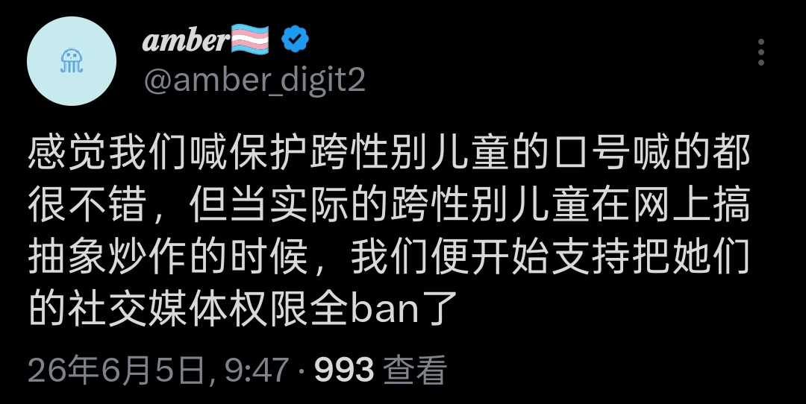

Shiori
@h191980276
什么叫你们不包容炒作呢，意思就是犯的事是炒作碍人眼，那就是在amber眼里弱势群体死活被霸凌才是无关紧要的小事，炒作碍人眼才是严重一点的

王小檬𝖂𝖎𝖑𝖑𝖆🍋
@willa_citrus
少在这假惺惺的 有利益相关的人应该知道自己信用不足而保持沉默
退一万步，就讲跟你我直接相关的，你要保护的“儿童”冲到刚术后的人频道里大喊辱跨词的时候，给你周围的人寄亚硝酸钠教唆自杀的时候，殴打和网暴其他跨性别儿童的时候，怎么没见你保护受伤害的人？受伤害的人不是trans kid了？ https://t.co/pMTFDXFnsN